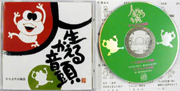
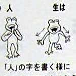
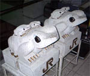
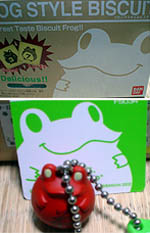
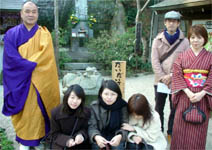
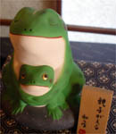

「人生かえる音頭」発売! 【福岡発かえる今日輪国同志記者】 ♪じ〜んせいは蛙跳び！ 前へ前へと、ぴぴょんがぴょん〜♪お待たせしました。８月にお知らせをしていました「人生かえる音頭」が発売になりましたぁぁ！！！シンプルだけど楽しく味わいのある歌詞、日本古来の音頭のリズム、ゆっくりめのテンポで小さなお子さんからお年寄りまで楽に踊れるし・・・１度耳にすると、あれれれ？！つい口ずさんでいたり、踊りだしていたり！という現象が、かえる今日輪国メンパーの各家庭、職場にも蔓延！！(８月からじわじわ〜っと)「かえるって何だかカワイイねぇ」と、新しいカエラーまで着々と増やしています！！v  さぁ、残りわずかな２００３年、そして新しい年・２００４年は「人生かえる音頭」を歌い、踊り、楽しく過ごしましょおおぉ！！！ＣＤは・・・「人生かえる音頭」、「ピョン太の恋」、「カラオケ・人生かえる音頭」、「カラオケ・ピョン太の恋」の４曲を収録。１枚・消費税込み￥２,０００(送料別)。収益金は各種児童募金へ寄付をします。 お問い合わせは・・・かえる今日輪国福岡事務局(OPEN平日９：３０〜１８：００、土曜日９：３０〜１２：３０ 日・祭日は休み TEL０９２(５２５）８７９２、FAX０９２(５２５)８７８８)まで
【全国かえる奉賛会】今年からは、ヨサコイとかサノヨイとか、踊りまくり集団の人々も、かえる音頭でおどりまくろうぜええええ。かえる踊りコンテストとかしたいねー
JR那須塩原駅に石像カエル出現！ 【尾張の国名古屋発かえる将軍】予が栃木県を行脚した時の事じゃ。JR那須塩原駅で珍しき親子蛙に出会うたぞ。親蛙がそれぞれ２匹の子蛙を背負うておる。台座にはしっかりと「JR」とある。しかも金文字じゃ。あっぱれなり、東日本旅客鉄道！予は駅奉公人にこの蛙の由来を聞こうと思うたが、列車の刻限が迫っていたゆえできなかった。 誰ぞ知らぬか？ 【全国かえる奉賛会】日本国有鉄道もやるもんよのう。国鉄職員のみなさああん、民営化して分離分割されても、かえるの心はひとつだああ。今年も原点に戻り、スト権ストを盛大にやってほしいぞおお。会社やすめるし。（意味不明）
新作カエル携帯ストラップを発売開始！ 【けろ天市場】今年六月の福岡かえる展５で大人気になって、売り切れた『かえる携帯ストラップ』が、けろ天市場で売り出すことになしました。
【けろ天市場】今年六月の福岡かえる展５で大人気になって、売り切れた『かえる携帯ストラップ』が、けろ天市場で売り出すことになしました。けろ天市場Cup!'S FROG 【けろ天市場ショップ／Cup!さま】かえる展でストラップを販売していた、Cup!です。よろしく。
いつもは福岡市中央区大名にあるショップ『Brillance』で作品を販売しています。ふとした縁で、カエルをデザインしたストラップを売っているうちに、かえる展でたくさんの人から購入してもらうようになりました。
 ビスケットのおまけつきカエル発売開始！【げこげこ大王７世直筆】バンダイから、カエルすきにはたまらん、菓子付きのカエルデザインが発売されたのを知っているかああ。くれぐれも注意しておくけど、お菓子のおまけではなくて、カエルが主役で、お菓子がオマケなのである。大王は『茶かえる』を手に入れたぞ。どうして、突然バンダイがフロッグデザインをはじめたのか、謎です。
 新春恒例かえる寺初詣！かえる博多人形も出現！【かえる展６実行委員会一堂】新春恒例のカエル寺初詣を敢行しました。当日は、福岡県小郡市横隈の如意輪寺に、福岡かえる展６実行委員会メンバーが集合。めでたく正月を過ごしました。かえる寺の原口住職もあたたかく出迎えていただき、感謝するなりい。
 また寺には、博多人形の新作カエル！『親子かえる人形』がありました。一体３０００円で、母親のお腹の中で、とっても幸福に眠る子かえるが、安らかなかえるです。
博多にきたときゃあ、一人できたが、かえる人形と一緒にカエル。寺にしかないので、見物がてら、寺にゆこうではないかあああああああああああああ。
カエルグッズぷれぜんと！【げこげこ大王７世直筆】かえる年の今年、可愛いわが子にカエルファッションを決めてもらった人の投稿写真を募集します。先着三家族にカエルグッズをプレゼントします。wakuro-3@hf.rim.or.jp
来月後半に『かえるお絵描き展』！【かえる展６実行委員会】来月後半から、福岡市中央区天神の三越デパート一階通路にある『天神パークサイドギャラリーで、過去五回のかえる展開催中に、みんなに描いてもらったカエル絵を一挙に展示します。詳細は、このかえる新聞でも順次紹介してゆくので、みんな注目していてくれええええ。 wakuro-3@hf.rim.or.jp
|
メールマガジン登録
メールマガジン解除
Powered by


かえる古新聞過去に取り上げた記事を見出し付きで一覧したい人は、ここをクリック◆創刊号を見る◆先週号を見る◆話題の号を見る◆かえる新聞の昔を読む
|
私も入っています。。全国かえる奉賛会
大王様に会うには、このバナーをクリック。ずっと奥に写真館があるぞ。全国かえる奉賛会に入会するには、自分のホームページのどこかに、下の部分を追加するとバナーがリンク付きで表示されるぞ。どんどん入会しましょー |


|